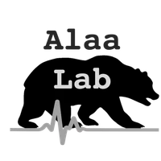
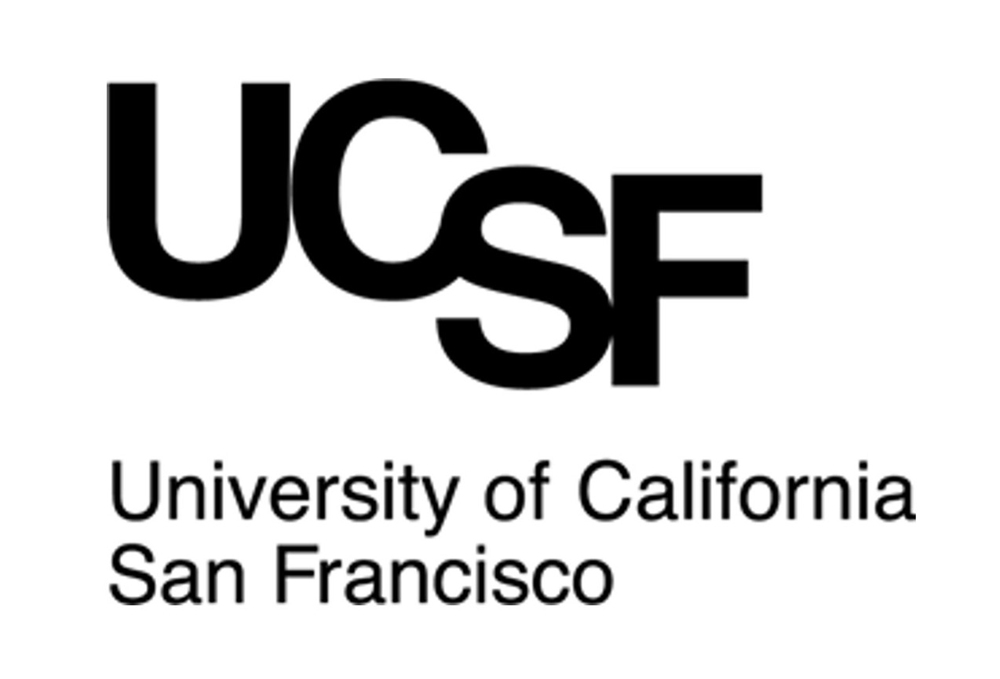
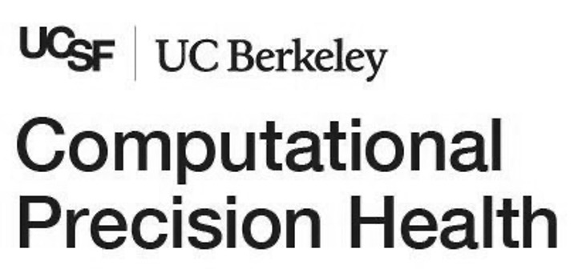

Developing and Evaluating AI
to Transform Healthcare
We are a joint UC Berkeley and UCSF multidisciplinary research lab building and evaluating AI for healthcare. We develop methods to bring AI into clinical practice, and benchmarks to measure its real-world impact.


Navigate our research here!
— press any key —
$ select focus research area▌
Featured Publications
All publications →


Position: Medical Large Language Model Benchmarks Should Prioritize Construct Validity
ICML 2025 · Oral Presentation